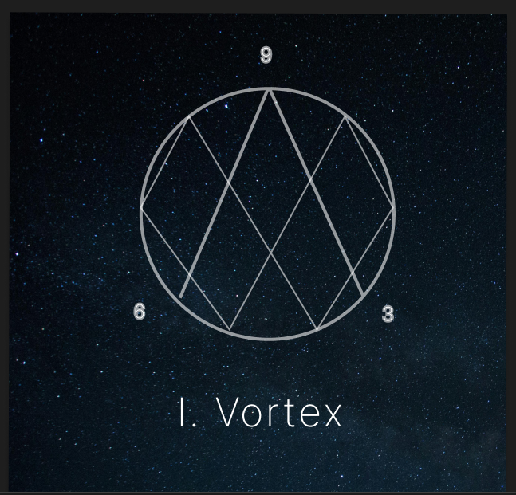
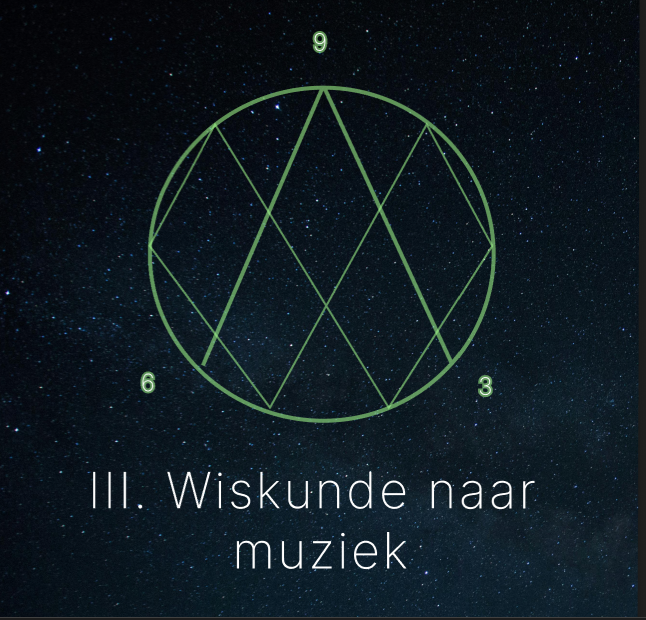
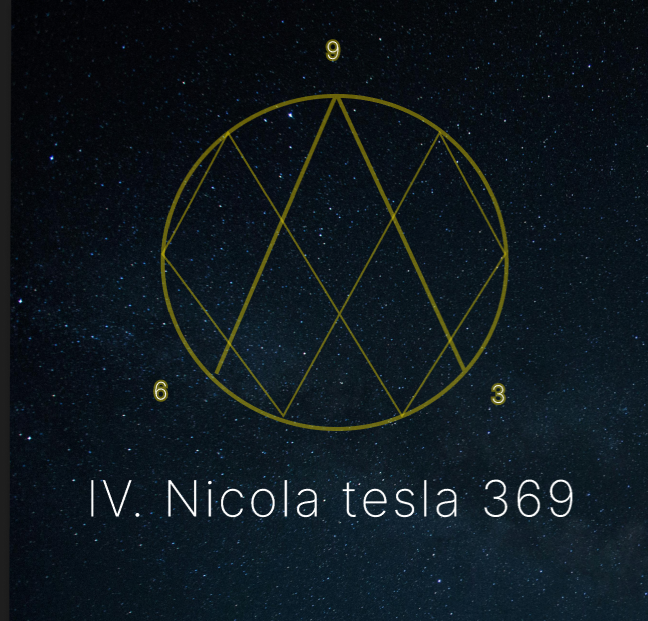
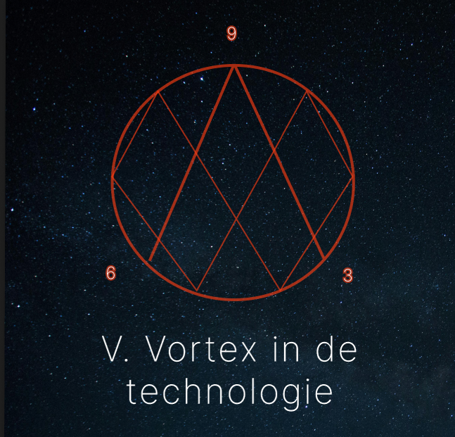
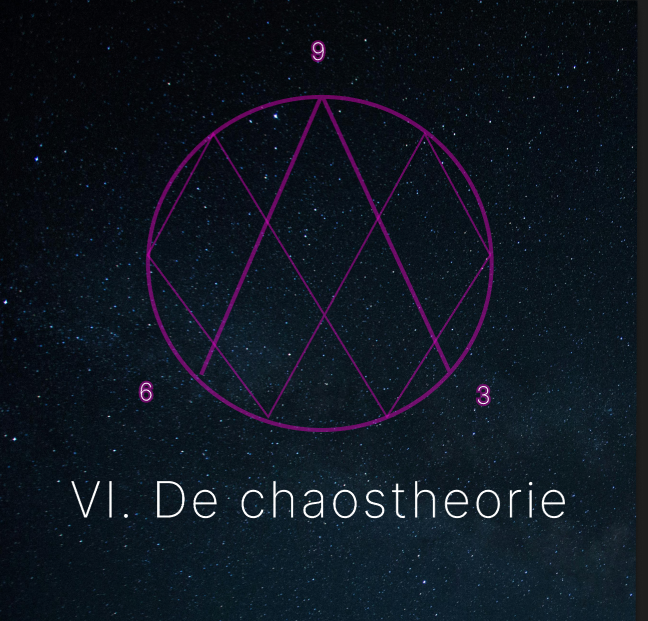

Afleveringen

In deze aflevering leggen wij de basis uit van Vortex Math...
Zie meer

In deze aflevering leggen wij uit hoe muziek en wiskunde met elkaar verbonden zijn...
Zie meer

Hier gaan we in op de beroemde uitspraak van Nikola Tesla over de getallen 3, 6 en 9...
Zie meer

We bespreken de rol van wiskunde in technologie...
Zie meer

Deze aflevering gaat in op chaostheorie en hoe Vortex Math inzicht kan bieden...
Zie meer